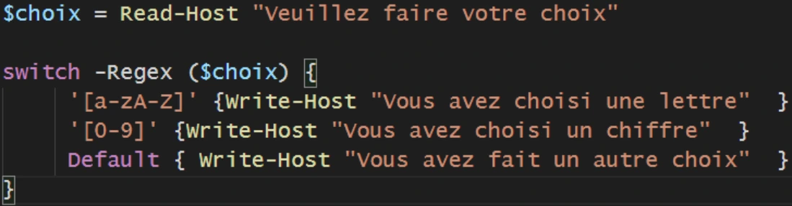
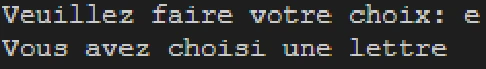
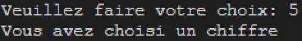
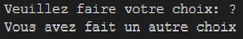
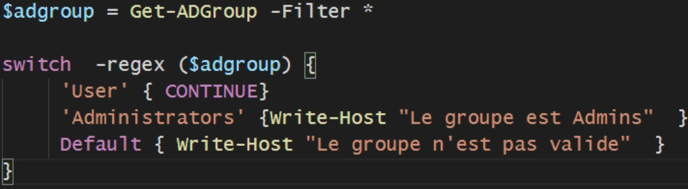
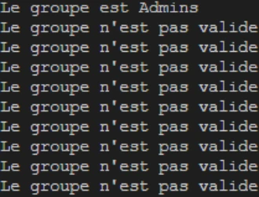
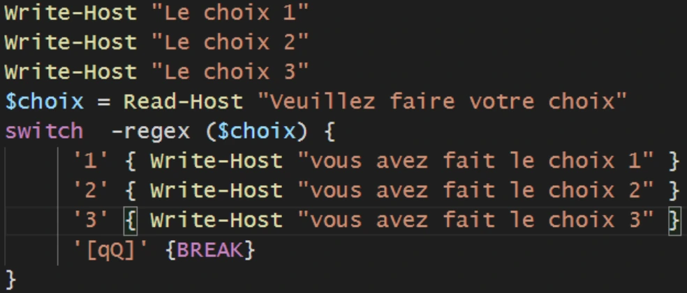
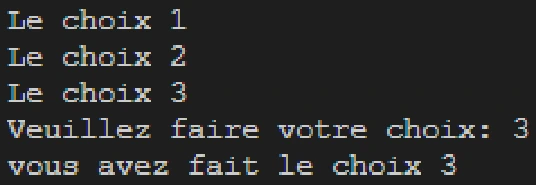

Transcription du support du Drive. Les formulations historiques et les exemples du document sont conservés. Les valeurs d’accès du laboratoire sont indiquées comme « fourni par le formateur ». Les adresses de messagerie personnelles utilisent example.com.
Démonstration 08 du module 4
La condition If permet de tester et de définir des commandes à exécuter en fonction d’un résultat « Vrai » ou « Faux ». Le If se limite à un ou deux tests maximum, au-delà il faut passer par la structure Switch. L’objectif de cette démonstration est de voir que le Switch permet de définir une action précise en fonction de la saisie d’une valeur.
Le Switch teste, au moyen d’expressions régulières, la variable $choix. Pour cela, il faut ajouter le paramètre Regex à la commande Switch.
En cas de caractère non identifié par les deux premières conditions, c’est la sortie par défaut qui est exécutée.
La structure Switch accède, comme la structure Foreach, les actions Continue et Break.




Si le groupe est User, il sera non testé. Les autres groupes seront testés ensuite.La structure Switch est largement utilisée pour constituer des menus à choix multiple.



